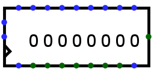

Shift Register
Shift Register
| Library: |
Memory |
| Introduced: |
2.3.0 |
| Appearance: |
 |
Behavior
This register consists of several stages, where each clock may lead to
each stage receiving the value in the previous stage, while a new value is
loaded into the first stage. The component optionally also supports parallel
loads and stores to all stages' values.
The clear input resets all stages to 0 (all
zeroes) asynchronously; that is, as long as the clear input
is 1, all values are pinned to 0, regardless of the clock input.
Pins
* An asterisk marks pins that exist only when the Parallel Load attribute
is enabled.
- West edge, top pin (input, bit width 1)
- Shift: When 1 or disconnected, all stages advance with the clock trigger;
but if it is 0, no advance takes place. This input is ignored if the Load
input is 1.
- West edge, middle pin (input, bit width matches Data Bits attribute)
- Data: When advancing the stages, the value found at this input is loaded
into the first stage.
- West edge, bottom pin marked with triangle (input, bit width 1)
- Clock: At the instant that this is triggered as specified by the
Trigger attribute, the component may advance the stages or load new values.
- *North edge, left pin (input, bit width 1)
- Load: When this 1, the values found on the other north-edge pins are
loaded into all stages at the next clock trigger. When 0 or disconnected, no
load occurs.
- *North edge, other pins (input, bit width matches Data Bits attribute)
- Data: These values are loaded into all stages when the clock is triggered
while the load input is 1. The leftmost input corresponds to the
youngest stage.
- South edge, left pin (input, bit width 1)
- Clear: When this is 1, all stages are asynchronously reset to 0, and all
other inputs are ignored.
- *South edge, other pins (output, bit width matches Data Bits attribute)
- Output: Emits the value stored in each stage, with the youngest stage
reflected on the leftmost of the pins (next to the clear input).
- East edge (output, bit width matches Data Bits attribute)
- Output: Emits the value stored in the final (oldest) stage.
Attributes
When the component is selected or being added,
the digits '0' through '9' alter its Number of Stages
attribute
and Alt-0 through Alt-9 alter its Data Bits
attribute.
- Data Bits
- The bit width of the value stored in each stage.
- Number of Stages
- The number of stages included in the component.
- Parallel Load
- If
yes,
then the component includes inputs and outputs facilitating
parallel access to all the stages' values.
- Trigger
- Configures how the clock input is interpreted. The value
rising edge
indicates that the register should update its value at the instant when the
clock rises from 0 to 1. The falling edge
value indicates that it should
update at the instant the clock falls from 1 to 0.
- Label
- The text within the label associated with the component.
- Label Font
- The font with which to render the label.
Poke Tool Behavior
If the Parallel Load attribute is no, or if the Data Bits attribute is more
than 4, then poking the register has no effect. Otherwise, clicking the
component will bring keyboard focus to the clicked stage
(indicated by a red rectangle), and typing a hexadecimal digit will
change the value stored in that stage.
Text Tool Behavior
Allows the label associated with the component to be edited.
Back to Library Reference